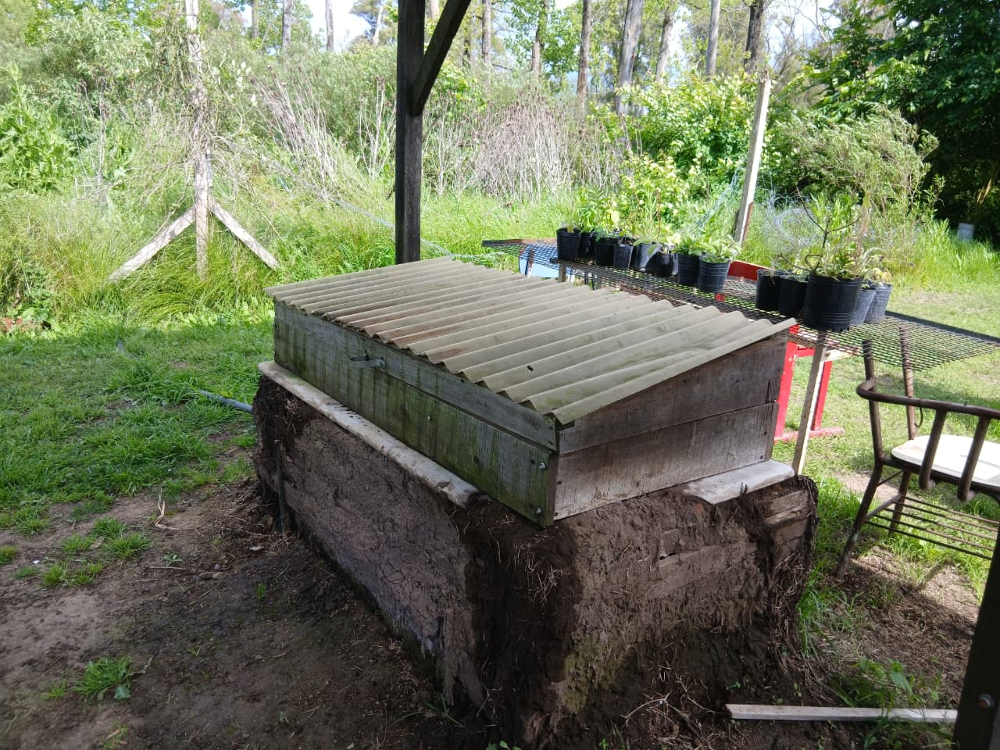
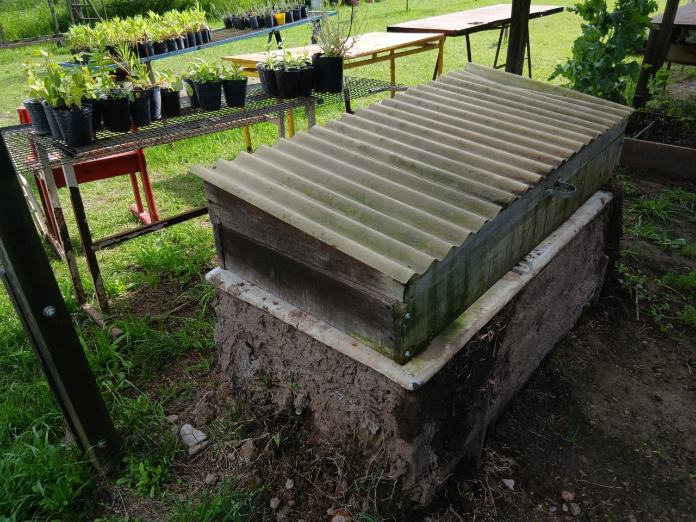
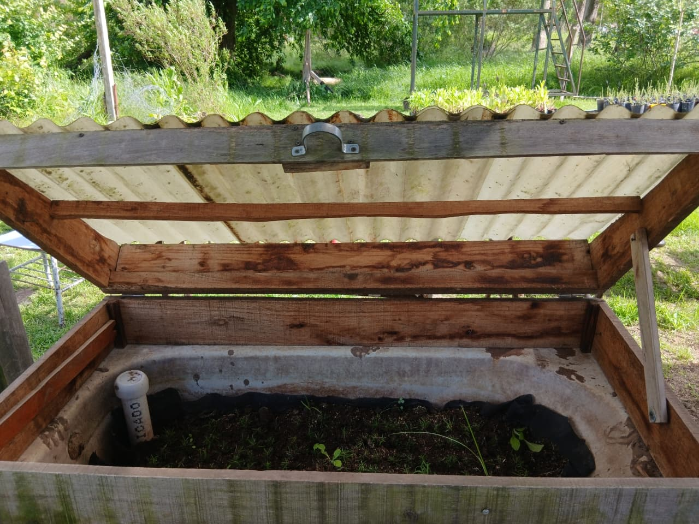
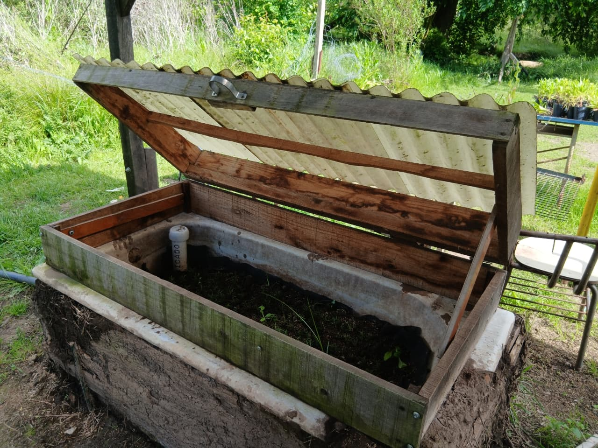

Wicking Bed fija





- Presupuesto
- $112.000
- Materiales
- $70.000
- Mano de obra
- $42.000
DESCRIPCIÓN La base es una bañera de 1m x 40 cm y 40 cm de profundidad.
PARTE SUPERIOR: Zona cultivable, se encuentra el sustrato. Tiene un techo de chapa transparente de plástico, con marco de madera, cuenta con dos patitas de apoyo de madera que sirven como sostén cuando se quiere dejar la tapa abierta. PARTE MEDIA: Como maya divisoria tiene una media sombra negra. En la parte exterior tiene una canilla de plástico de nivelación, que al igual que con la Wicking portable, demarca un límite de carga.
PARTE INFERIOR: El sistema de cañería es sencillo, el tubo de carga es la unión de dos tubos PVC de ¼ de 1 pulgada, que forman un único tubo en forma de L. Para el desagüe se colocó conectado a la rejilla de la bañera, un caño subterráneo que sale a la superficie y se extiende 1,6 m para redirigir el agua. El interior de esta zona está lleno de piedras, mientras que en el exterior, se construyeron paredes de aislamiento térmico, primero dándole estructura con tablones de madera para luego recubrirlo con un revoque de barro.